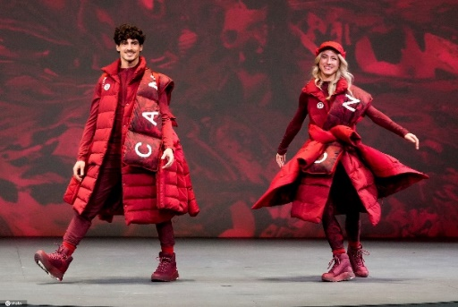
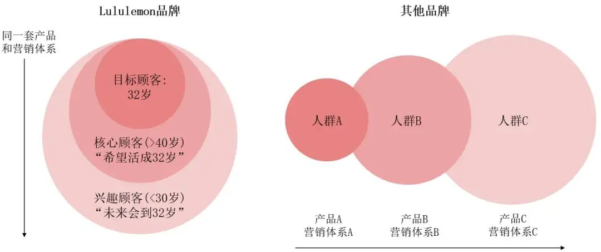
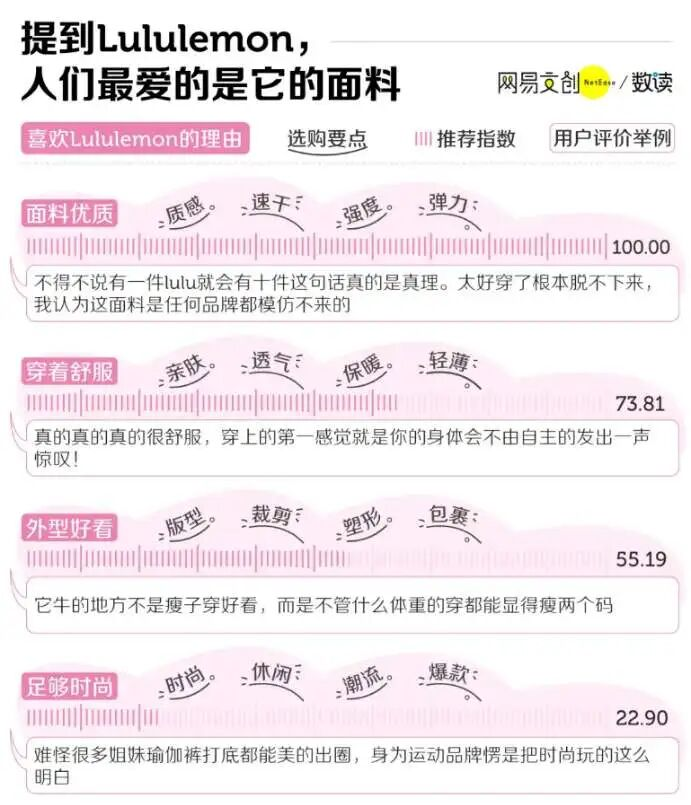
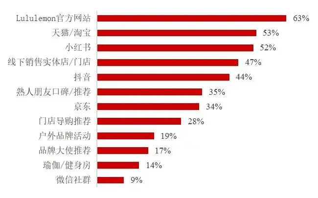
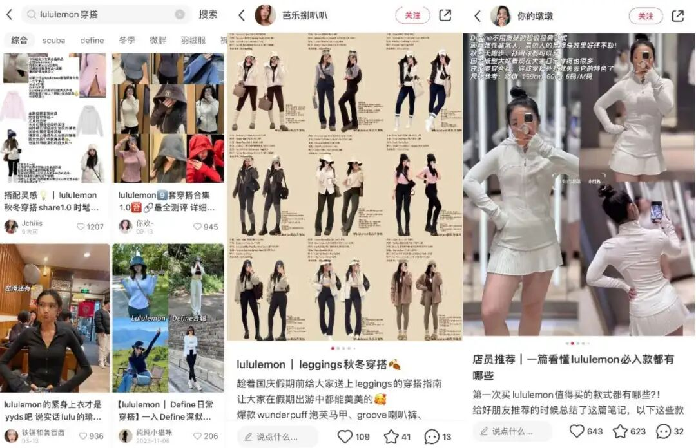
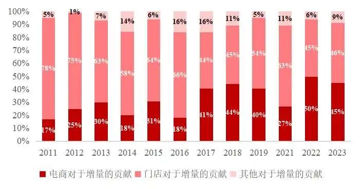

Lululemon的策略不仅体现了其对市场的深刻洞察，也展示了其在数字化时代下的创新营销能力，使其在竞争激烈的市场中脱颖而出。
品牌崛起：从小众服饰到行业巨头
Lululemon，这个起源于加拿大的运动服装品牌，已经成为继Nike和adidas之后最成功的运动服饰品牌之一。自1998年在温哥华创立以来，该品牌仅用二十余年时间便实现了从区域品牌到国际巨头的跨越。巅峰时期，Lululemon 瑜伽裤甚至成为时尚圈的 "硬通货"——拥有一条Lululemon瑜伽裤是许多人心中的时尚标配，而其市场表现与品牌价值一度直逼行业龙头 Nike。
1998年，随着瑜伽在欧美的流行，Wilson注意到瑜伽班人数激增，预见瑜伽将成为新的运动社交趋势。他发现市场上缺乏专为女性设计的高质量运动服，大多数品牌只是将男性款式“Shrink it and pink it.”。于是，Wilson创立了Lululemon Athletica，专注于面料、工艺和设计，以满足女性对运动服的需求。其对产品细节的关注使Lululemon在温哥华本地迅速获得好评，并开始向其他城市扩张，逐渐成为“加拿大第一专业运动品牌”。
图1 2022年北京冬奥会身着LuLulemon的加拿大代表团
Lululemon 的崛起堪称精准定位的教科书案例。Wilson 提出的 "Super Girls" 概念，将目标客群锁定为年收入 10-15 万美元、受过高等教育、追求品质生活的都市女性。通过塑造 "运动即时尚" 的生活方式哲学，品牌成功构建起高黏性消费社群。这种 "中产女性生活提案" 模式，不仅创造了持续增长的消费需求，更将产品溢价能力提升至行业领先水平。
自成立以来，Lululemon一直展现了惊人的增长能力。2005年获得安宏资本注资后，Lululemon迅速扩张，2007年在纳斯达克上市，随后连续14个季度销售额增长超30%。2019年后，营收和净利润迅猛增长，市值超过620亿美元。2022年7月，品牌市值超过阿迪达斯，成为全球第二大运动品牌。即使2024年市值一度缩水超过150亿美金，但品牌一季度全球净营收同比增长10%，净利润3.12亿美元，整体增长趋势仍然向好。
如今，Lululemon毫无疑问成为了近几年全球最成功的体育服饰企业之一，Lululemon的成功得益于其早期精准的市场定位、瑜伽产业的蓬勃发展、社群营销能力和科技创新设计能力，使其成为瑜伽乃至体育领域的领导者之一。

图2 LuLulemon独具特色的奥运羽绒服
网络时代的品牌策略剖析
1、品牌显著性
品牌定位：“Supergirl”的圈层带动
Lululemon的目标顾客充分体现了品牌的目标定位，进而影响品牌文化的构建。品牌最初精准瞄准了年收入10-15万美金、未婚、高学历的32岁“超级女孩（Super Girls）”，但实际上，其目标顾客不仅于此。根据市场测算，北美符合该画像的潜在客群仅约400万人，若按 100% 渗透率计算，每人每年消费10条100美元瑜伽裤的理论天花板仅40 亿美元，而 Lululemon 2023年实际营收接近100亿美元。
前CEO Christine Day透露，Lululemon实际上有两类用户：Super Girls在口碑传播上较为积极，但对品牌销售额贡献并不是最大的。他们的核心作用在于作为“诱饵”吸引外部的消费者注意和兴趣。而另一核心顾客群体，年龄在40-45岁，或许没那么喜欢运动、追求时尚，但对生活品质有高要求，他们构成了主要收入来源。同时，品牌还拓展至青少年和Z世代，即未来的Super Girls。
由此看来，品牌本质上通过Super Girls的生活方式建立圈层，然后让该圈层“破圈”，成为其他人的梦想，进而构建出品牌的首要、独特地位。品牌消费者认可品牌所代表的生活方式，或是追求“看起来像32岁”的冻龄感，或是渴望“高品质健康生活拥有者”的自我认同。这种价值传递使品牌突破瑜伽垂直领域，转型为融合运动与时尚的生活方式品牌，目标客群扩展至所有对时尚敏感的消费群体。
Lululemon的特别之处在于，其初始圈层与扩展圈层有很强的关联性，一个圈层的消费决策自然带动另一个圈层。这种圈层连带效应使得Lululemon的营销费率保持在2-5%，远低于服装行业的10%。通过这种方式，Lululemon成功地将目标顾客群体拓展至更广泛的市场，同时保持了高效的营销效率。

图3 Lululemon与其他品牌的圈层拓展对比 （资料来源：增长黑盒）
产品创新能力：用户洞察带动产品革新
Lululemon的产品以面料优质、高强度、高弹力、速干和轻薄著称，其高端品牌定位建立在坚实的产品质量和创新基础之上，这是其获得各圈层消费者认可的关键。即使新用户不追随品牌文化，也会因其产品质量而成为消费者。
Lululemon的产品创新动力源自其DTC模式下的用户洞察能力。公司不依赖传统市场调研工具，而是通过一线店员的观察来了解客户需求，形成了一种“人肉CRM”。例如，将衣服折叠桌放置在试衣间附近，以便员工能够听到用户的反馈。
此外，Lululemon的用户洞察力还不断推动着产品更新和品类丰富。品牌不再局限于女性市场，男性产品销售额占比上升，产品线变得更加丰富和男女通用。从2019年到2023年，男性消费者占比显著增长，超过了30%，突出了品牌对市场需求的敏感和适应性。
在产品端，品牌从技术和时尚度作为核心切入点，提升产品吸引力。技术上，Lululemon通过研发由86%尼龙和14%莱卡制成的面料，解决了传统瑜伽服的延展性和透明度问题。除了穿着舒适，Lululemon的产品因其时尚设计而受到推崇，如时尚的配色、显瘦的版型、无缝剪裁和菱形内衬设计，解决了“尴尬线”问题。
科技是可被定价、被模仿的，但是时尚却是无价的。由此，Lululemon成功地将瑜伽服及其他运动服饰打造为兼具品质与时尚的代表，成为提及高端时尚运动服饰时的首选品牌，确立了其在众多运动服饰品牌中的显著地位。

图4 小红书平台中Lululemon的消费者反馈 （资料来源：数读）
2、品牌差异性
品牌定位和高品质的独特产品为Lululemon的差异化战略提供了夯实的基础条件和方向。那么它又是如何在实践上实现其目标顾客的拓展并脱颖而出，实现差异化的呢？
品牌扩张的关键在于找到新的触点以触及更广泛的消费群体。Lululemon在激烈竞争中需以差异化的方式触及消费者，在他们心中塑造出生动且具有说服力的品牌形象，从而在消费者中树立起独特的品牌力。Lululemon的策略重点在于多元化的网络营销，将“门店＋私域＋种草”作为主要发力方向，在国内构建了“公众号＋小程序商城＋企业微信＋微信社群”的私域生态，充分利用了网络时代的外部性，这是其品牌差异性的关键所在。
社群营销：强烈情感联系的建立与聚变
Lululemon的营销策略以“社群营销”著称，将社区元素视为品牌的独特优势。其社群不仅是基于平台的简单连接，而是出于共同的理念和行动聚集人群。与依赖微信群的营销不同，Lululemon最核心的社群更侧重于线下活动，本质上这里的社群更接近品牌社群的概念。
Lululemon社群由产品教育家、品牌大使和超级女孩三类人构成。首先，最特别且重要的“产品教育家”主要是门店员工，他们对于品牌高客单价领域是一个非常重要的存在。品牌创始人Wilson认为，用户是什么样的，就得选择什么样的员工，因而Lululemon的店员几乎都是高学历、爱运动的人，他们不仅是销售，还直接与消费者分享运动和健康知识，用低营销成本推动了销量增长。
其次，“品牌大使”是具有影响力的引领者，包括行业领袖和运动专业人士，他们通过自身影响力推动品牌理念的传播，如在中国区签约了200余位“品牌大使”，组织线下活动给门店拉新和促活，努力构建社区与消费者建立起深度联结。
最后，“超级女孩”是社群活跃度的关键，通过参与Lululemon组织的多样化活动，她们成为品牌的自然推广者。部分超级女孩作为KOL，在小红书等平台上进行口碑传播，例如#今天穿Lululemon话题获得了2.3亿次浏览。这种社群营销策略不仅增强了品牌忠诚度，还通过低营销成本实现了高效的品牌传播和销量提升。
Lululemon通过社群营销策略，成功将品牌形象深植于消费者心中。然而，随着网络时代的到来，Lululemon的社群营销策略也在不断丰富和演变，社交媒体等渠道为品牌传播和差异化定位增添了新的驱动力。如今消费者往往选择以小红书、天猫为代表的线上渠道来获取品牌信息，而去中心化的线下模式效率并不高，而公司资源也正在从品牌大使模式向社交媒体创作者网络（content creator network）倾斜，以期追求更大的规模效应。

表1 Lululemon消费者了解品牌及产品信息的渠道 （数据来源：BigOne Lab）
Lululemon近年来的爆火，离不开社交媒体的助推。Lululemon在官方社交媒体上的策略更偏向内容营销，较少广告投放，其中广泛传播的是消费者口碑。品牌利用KOL通过社群、社区、社交进行品牌营销，抓住了新流量渠道，以较低成本开展营销推广。品牌初期，Lululemon是“运动休闲风（athleisure）”的缔造者和引领者。产品的功能性和时尚设计元素让运动服融入生活中的每个场合，掀起了21世纪10年代的legging时尚潮流，成为了明星和网红的最爱，在众多运动品牌中脱颖而出，开始受到大众的追捧。
如今，社交媒体中海量内容被生产，小红书是Lululemon主要种草平台，带动了线上线下的联通。品牌鼓励员工开设小红书账号，分享新品穿搭和生活分享，同时门店也开设官方账号，推送笔记。这种模式不仅降低了营销成本，还产生了大量用户互动，每天能产生上千条账号私信，预计额外带来10%以上的客流增量。同时，品牌消费者也会自发地在小红书等平台生产内容，分享产品和穿搭、推荐好物等。
社交媒体内容的复利效应使得Lululemon能够整合公域和私域流量。品牌在社交媒体中露出二维码、手机号，直接引流至企业微信号，新用户经过一系列孵化后加入社群，进而到店下单。社群成为Lululemon私域运营的主要形式，推送大量图片、小程序、视频等，活跃度极高。小红书KOS账号产出的内容被用作社群运营的素材，二次复用，提升了品牌在社交媒体上的权重。相关数据预估Lululemon私域的GMV占比在10%左右（约7亿）。

图5 小红书Lululemon话题相关内容
线下的社群营销为Lululemon构筑了坚实的品牌核心，而网络时代中社交媒体的兴起则不断扩展了其社群的影响力，同时网络属性也进一步强化了品牌形象，使Lululemon的“超级女孩”标签为更广泛的潜在消费者所熟知。消费者的购买决策越来越依赖于全渠道体验，而非单一触点。因此，Lululemon通过线上线下整合，打造全域联动的内容体系，实现了从社交媒体到私域社群的无缝衔接，有效提升了用户的购买体验和品牌忠诚度。
电商驱动：品牌认知与传播的新增长
除社群营销以外，Lululemon电商驱动的策略也让品牌更具活力，使其从中脱颖而出，实现在电商时代的进一步的增长。
近年来，Lululemon开始攻克海外和电商渠道，在饱和的线下零售市场之外找到更大的人群资产，成为长期破圈的燃料。以中国区为例，Lululemon在2016年正式开设实体店之前，就开始试水电商。2015年11月Lululemon天猫官方旗舰店开张，2018年又进驻微信商城。2019年4月启动了Lululemon天猫超级品牌日。不断加码的电商渠道投入，除了带来高速增长的营收之外，也快速提升品牌知名度。
2024年初，Lululemon正式将数字渠道拓展至抖音平台。在中国市场中，除了传统渠道外，很多人在看直播。一方面，抖音作为一个汇集了6亿用户的平台，能够触达不限于一二线城市的人群，更多喜欢运动、拥有良好运动习惯和消费能力的人，因此进行产品教育的优良渠道之一，而不只是销售产品。
另一方面，从抖音获得的数据，也能为Lululemon未来的新店选址提供建议。自入驻抖音以来，2个月时间内品牌自播42场，预估销售额1000-2500万元，并且没有因为入驻抖音就打折促销，也没有把火力集中在瑜伽裤上，而是借助内容平台进行“新品种草”，鼓励用户去最近的门店试穿新品。

表2 Lululemon各渠道对增量的贡献 （数据来源：公司财报）
总结
Lululemon通过精准的品牌定位和高质量产品，成功塑造了细分市场的品牌形象，并为后续的营销和扩张打下了坚实基础。品牌聚焦于特定运动场景，制定了清晰的用户画像，并通过细致的消费者洞察推动了品牌形象的树立。
在互联网时代，Lululemon充分利用数字化渠道，将品牌精神融入营销推广的各个环节。在社会化媒体时代，Lululemon成功地利用品牌社群的力量，建立了良好的品牌忠诚乃至品牌资产。通过品牌核心的社群营销方式，在线下的物理空间（实体店及大型城市活动）中组织社群活动，培养了忠实的消费者群体。
同时，进一步在线上的各社交媒体传播“幸福、舒适、时尚”的品牌理念传递，用数字化内容作为链接用户和零售场景的纽带，充分发挥去中心化的特长，加速了Lululemon品牌的认知和传播，呈现出极强的网络外部性。
此外，Lululemon的高端市场定位与“符号消费”紧密相连，这一消费趋势在互联网时代得到了充分放大。普华永道2024年报告预测，中国将在2030年将以1,480亿美元市场规模成为全球最大的个人奢侈品市场。
在社交网络的推动下，消费者通过分享时尚新品来彰显个人品位，从而激发炫耀性消费心理，步入“符号消费”时代。依据自我表现理论，个体总是希望在他人心中树立尽善尽美的形象，而为了维持和树立这一良好形象的特征，他们通常会选择购买那些能够代表或是拥有高声誉的产品。Lululemon通过准确定位和
引导女性消费者追求时尚与健康的热汗生活方式，赢得了北美高知女性的认同，并成功进入中国女性消费市场。
综上所述，Lululemon的策略不仅体现了其对市场的深刻洞察，也展示了其在数字化时代下的创新营销能力，使其在竞争激烈的市场中脱颖而出。品牌通过线上线下结合的社群营销策略，以及对“符号消费”趋势的把握，成功塑造了品牌力，并在快速拓展中实现了聚变效应。
参考文献
[^1]李瑟.Lululemon超过adidas成为全球第二大运动服饰集团[EB/OL].(2022-07-12)[2024-11-13].http://www.linkshop.com/news/2022490164.shtml.
[^2]Forbes China.Lululemon发布2024财年第一季度财报，全球业务净营收同比增长10%达22亿美元[EB/OL].(2024-06-06) [2024-11-13].https://www.forbeschina.com/innovation/68014.
[^3]增长黑盒.万字破解Lululemon五大谜题，颠覆你对品牌破圈的认知[EB/OL].(2024-02-02)[2024-11-13].https://mp.weixin.qq.com/s/UemsrSy6uzPclayycpnJW.
[^4]Harvard Business Review.Leadership, Culture, and Transition at Lululemon[EB/OL].[2024-11-13].https://www.hbs.edu/faculty/Pages/item.aspx?num=39817.
[^5]王亚肖.Lululemon品牌社群营销模式研究[J].中国市场,2017,(23):115-116+118.DOI:10.13939/j.cnki.zgsc.2017.23.115.
[^6]造物者咨询.深度案例拆解：Lululemon如何在头部运动品中杀出一条血路[EB/OL].(2024-03-22)[2024-11-13].https://xueqiu.com/7275769621/283152238.
[^7]经济观察报.对话lululemon高管：品牌核心是“好产品+深度客户联结｜进博会访谈[EB/OL].(2024-11-07)[2024-11-13]. https://news.qq.com/rain/a/20241107A04F7Q00
[^8]Jon Cherry. How Lululemon plans to help the world feel well again[EB/OL].(2023-08-07)[2024-11-13].https://cherryflava.com/lululemon-growth-strategy/
[^9]普华永道.普华永道发布《中国内地及香港地区奢侈品市场报告》[EB/OL].[2024-11-13].https://www.pwccn.com/zh/press-room/press-releases/pr-130424-1.html
[^10]史清敏,赵海.自我表现理论概述[J].心理科学进展,2002,(04):425-432.